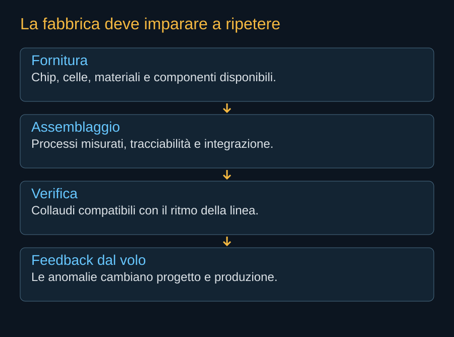

Una costellazione di calcolo vive prima di tutto in una fabbrica. Per mettere in servizio molti satelliti occorrono materiali, processi, persone e strumenti capaci di produrre veicoli con qualità ripetibile. Il nome Gigasat indica questa ambizione industriale. SpaceX presenta a Bastrop una futura capacità di produzione e dispiegamento di migliaia di satelliti, con un obiettivo a partire dalla fine del 2027. È un piano, non un consuntivo di produzione.
Un edificio non è ancora una linea
La superficie di un impianto può impressionare, ma il ritmo utile dipende dal percorso dei componenti. Occorre sapere quante postazioni lavorano, quali fasi richiedono più tempo e quante unità vengano scartate o rilavorate. Una grande linea può restare ferma se manca un componente che sembra piccolo rispetto al resto del satellite.
I processori rappresentano una filiera diversa da quella delle strutture meccaniche. La loro disponibilità dipende da produzione dei chip, packaging, memorie e domanda concorrente. Anche pannelli e radiatori richiedono materiali e processi specifici. Il collo di bottiglia può spostarsi mentre la fabbrica cresce; la capacità nominale di una fase non garantisce quella dell’intero prodotto.


La qualità deve poter seguire il ritmo
Ogni veicolo deve essere verificato senza trasformare il collaudo in una seconda produzione artigianale. I test ripetitivi possono essere automatizzati; quelli che richiedono camere e tempi lunghi chiedono una pianificazione dell’attrezzatura. Il tempo di attesa in una coda può pesare quanto il tempo effettivo di prova.
La tracciabilità permette di collegare un’anomalia a un lotto, a un processo o a una modifica. Con migliaia di unità, correggere un problema prima che si distribuisca su molti veicoli diventa una capacità economica e di sicurezza. La fabbrica deve ricevere informazioni dal volo, conservarle e tradurle in cambiamenti verificabili.

Modificare senza perdere il controllo della serie
Una linea può incorporare miglioramenti progressivi. Questo aumenta però il numero di configurazioni che le operazioni devono conoscere. Se cambia un processore, potrebbero cambiare software, temperatura e consumo. Se cambia un pannello, potrebbe cambiare la risposta meccanica. Le versioni devono essere identificabili per capire quali satelliti possano eseguire un certo lavoro.
La modularità aiuta quando stabilizza le interfacce e limita gli effetti del cambiamento. Non significa che ogni nuova scheda sia qualificata per il satellite precedente. Una scelta industriale efficace deve conciliare rapidità del settore informatico e responsabilità di un hardware che non sarà facilmente raggiungibile dopo il lancio.
Le persone nella scala
La produzione seriale richiede competenze che non si vedono nel rendering: assemblaggio, test, sicurezza, gestione dei fornitori e diagnosi. La capacità cresce anche formando persone e rendendo condivisibili conoscenze che inizialmente appartengono a pochi esperti. L’automazione non elimina questo lavoro; spesso ne modifica la posizione nella catena.
Non possediamo in questa edizione dati pubblici sufficienti per descrivere la pianta operativa di Gigasat o attribuire alla linea un ritmo misurato. Per questo lo schema rappresenta il processo industriale, non una mappa inventata. I futuri aggiornamenti dovranno distinguere edificio, installazione delle attrezzature, prime unità e produzione accettata.
Il traguardo sarà la continuità fra fabbrica e orbita: veicoli consegnati, lanci disponibili, servizio vendibile e feedback che migliori la serie. La dimensione del complesso diventerà significativa quando questo percorso produrrà risultati ripetuti.
Fonti pubbliche e tracce
- SpaceX, Starmind e scheda AI1. Consultata il 10 ottobre 2026. Fonte aziendale per la scheda corrente e gli obiettivi Gigasat; non rapporto di prove in volo.
- NVIDIA, SpaceXAI e prima generazione Starmind. 24 agosto 2026. Conferma l’adattamento di Vera Rubin NVL72; non pubblica una distinta completa del satellite.
- NASA, strutture e meccanismi dei piccoli satelliti. Riferimento generale per integrazione e strutture dispiegabili; non specifica i meccanismi Starmind.